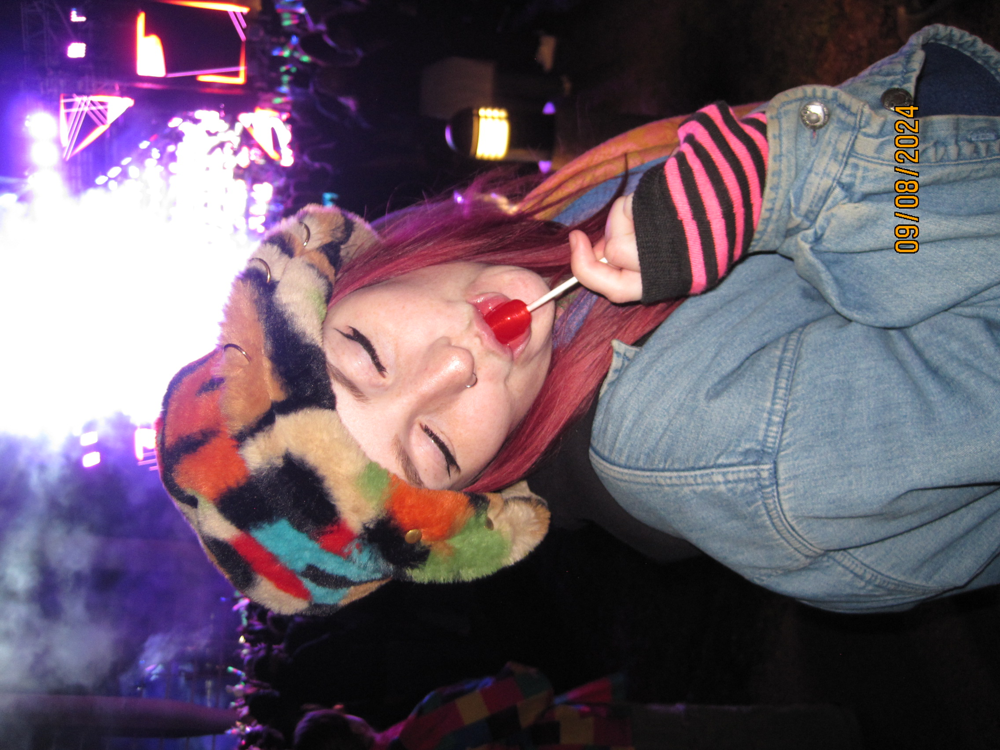

About Me
My name is Taylor, I was born on April 2nd 1999 and I am 25 years old. Currently I am studying Interactive Media Design at Algonquin College and formerly studied at Carleton University. I graduated from Carleton University with a Bachelor's degree in Communications and Media Studies back in 2021. Since graduating I have worked in a variety of different fields, all of which have led me to where I am now.
At the age of 16 I became a lifeguard and advanced swimming instructor with the City of Ottawa and am now one of the aquatic supervisors and head-lifeguards. During the pandemic I moved into a temporary position with OPH then shortly after went back to aquatics when my contract ended. After the pandemic I became an ABA therapist and special needs teacher, since at the time, I thought I was going to pursue becoming a teacher. Shortly after I then went back to aquatics. Evidently, it was clear I didn't know what I wanted to do with my career.
This past May I broke my femur. I was admitted to the hospital for three days and underwent surgery in which they placed roughly a 12 inch metal plate and 8 screws into my leg. Because of this major injury I became unable to work and have been on medical leave ever since my injury. During my recovery I began reflecting on myself, my wants, my dreams, and what direction I wanted to go in. Over the past three years my parents have encouraged me to go back to school but I wasn't able to decide what I would go back to school for. But something changed, something shifted once I broke my leg and it was that unfortunate and painful experience that brought me here. In a way I'm grateful this happened to me because otherwise I think I would still be where I was before, confused, depressed, and unmotivated.
Everything happens for a reason –Aristotle
Hobbies
- Hula Hooping
- Piano
- Drawing
- Baking
- Painting
- Writing
- Thrift Shopping